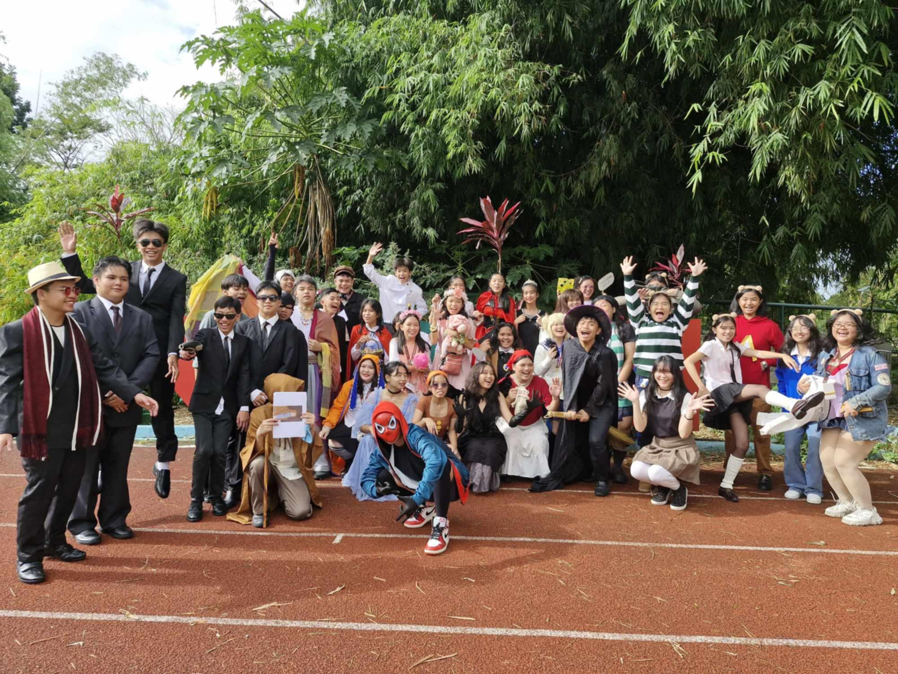

In the photo, it shows a grocery cart full of drinks. This was as I assisted my mother in buying the beverages for our class' celebration for teacher's day this year. This year's teacher's day was able to appreciate the educators of our nation for their service as well as create a fun event for both teachers and students.
Intramurals
In October, this year's intramurals had begun. With this event, students were able to show their athletic abilities as well as cultivate skills and morals such as team work, perseverance, and sportsmanship.
English Month

The month of November or English month was kicked off with a parade around the school's oval as students of each level portrayed characters of different books.
MAPEH Cha-Cha
Following up, we had to dance cha-cha for our MAPEH performance task. It was a assignment that we had been able to prepare for as we had to create our own routine.
UN Month
On November 8, which was my birthday, the closing program of the AP Month had happened. It started with each class's representative showing off the creative yet sustainable costumes that they have made to portray a historical figure. Following was the awarding of the past participants and winners of the other contests held. I won second place I'm the oratorical contest, I had the highest score in comparison to the other grade 9 section's representative, and the second highest score in all grade levels overall. /font.